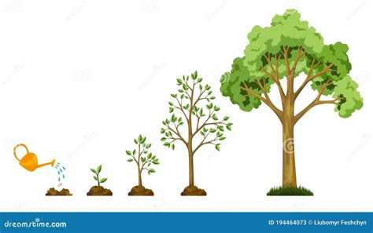
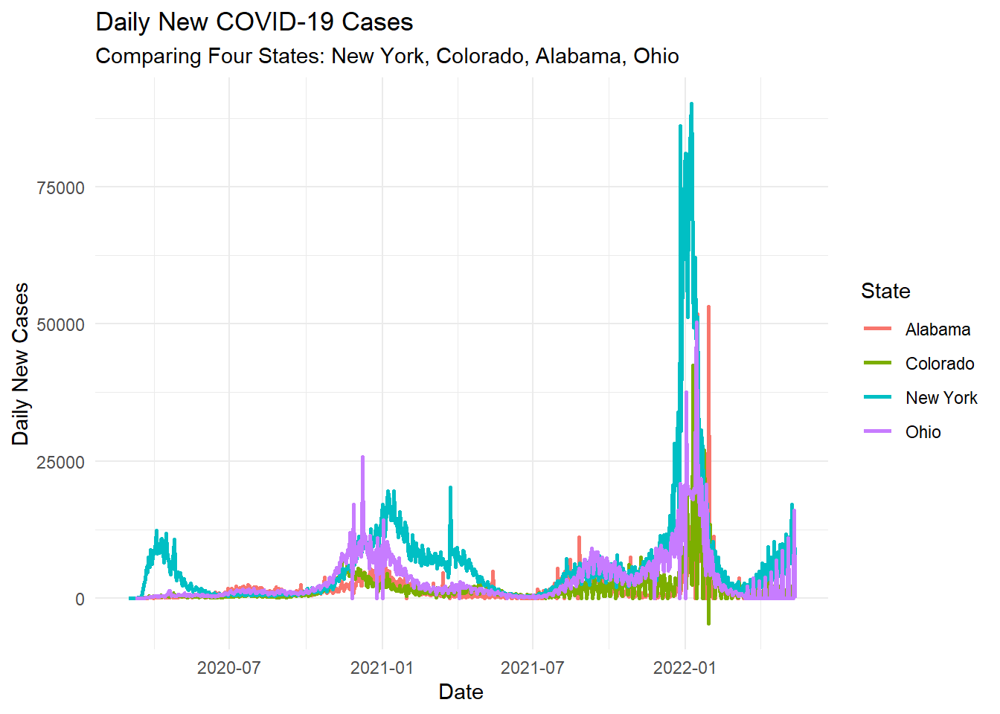
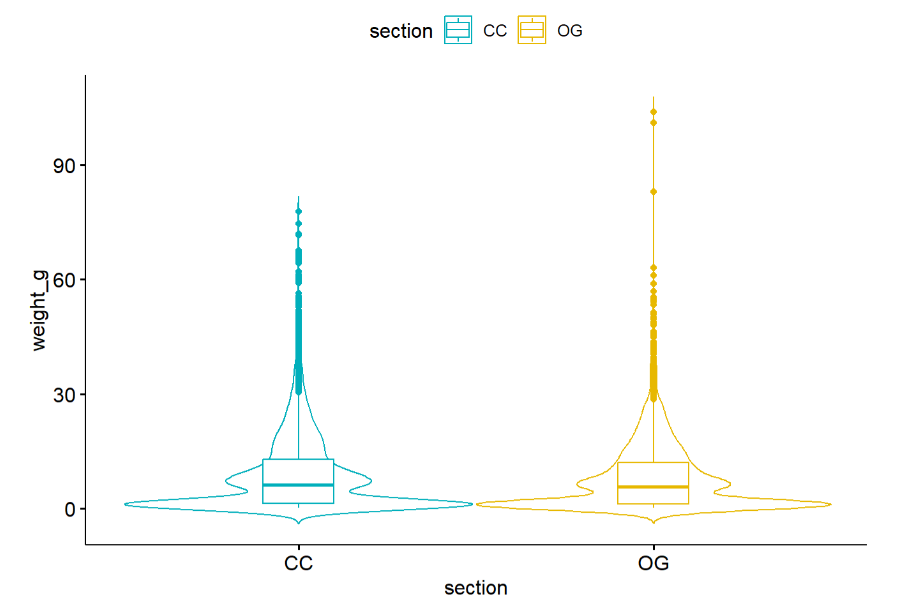
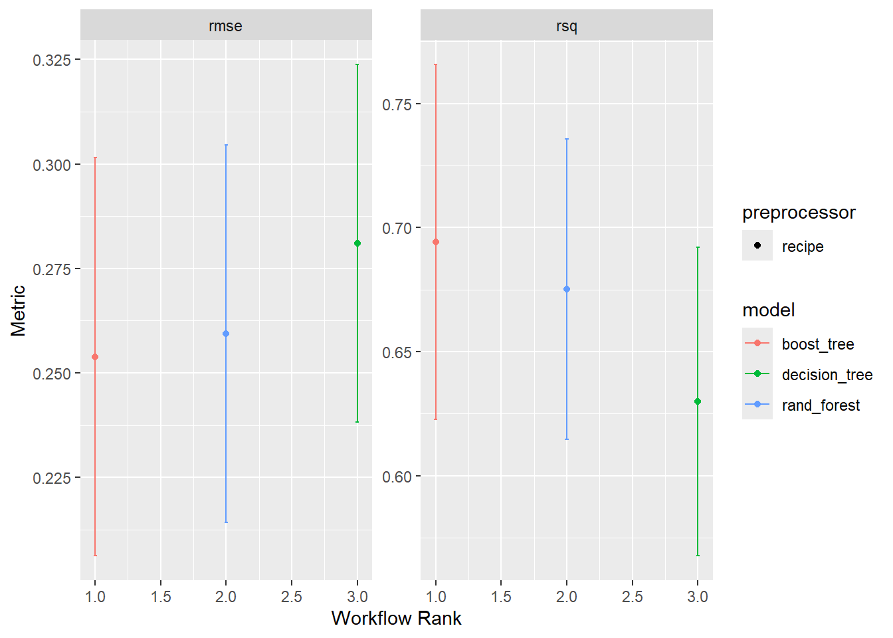
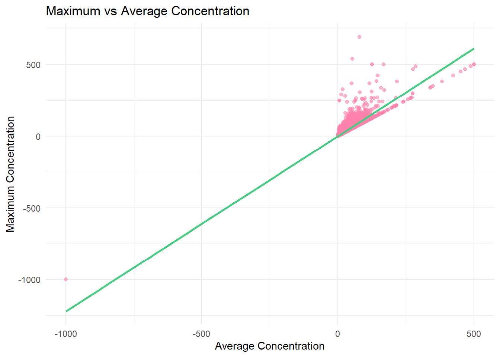
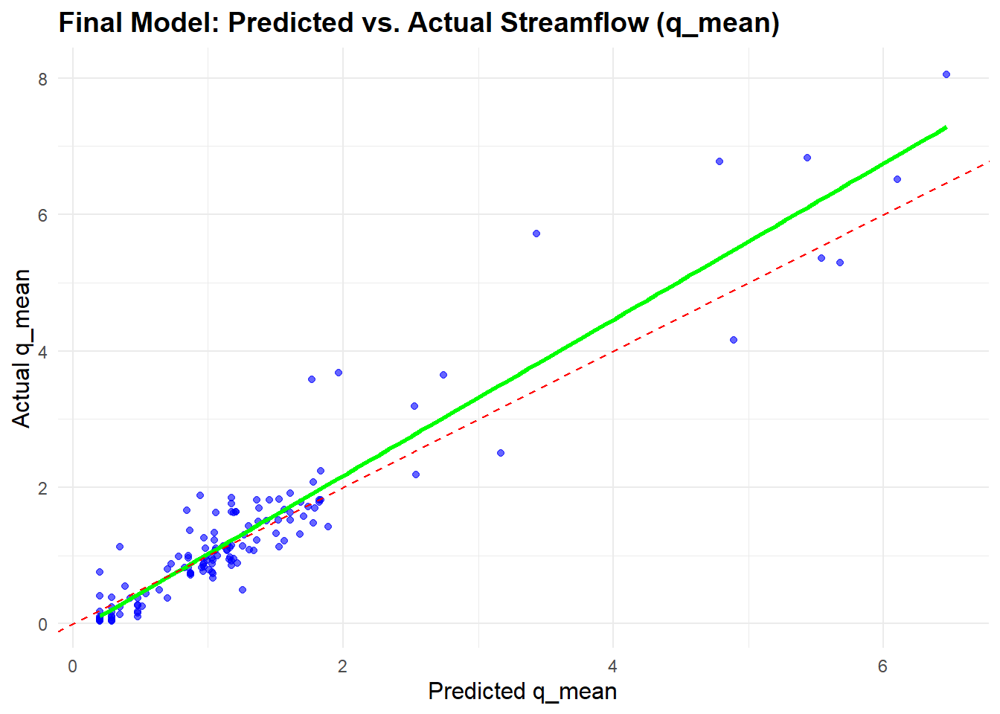
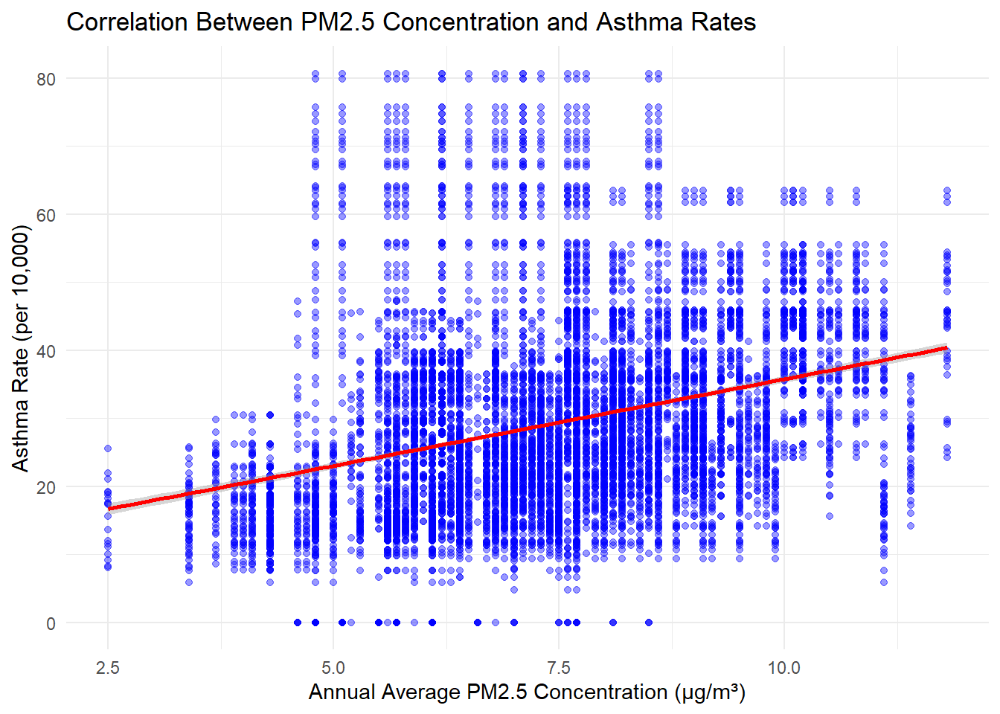
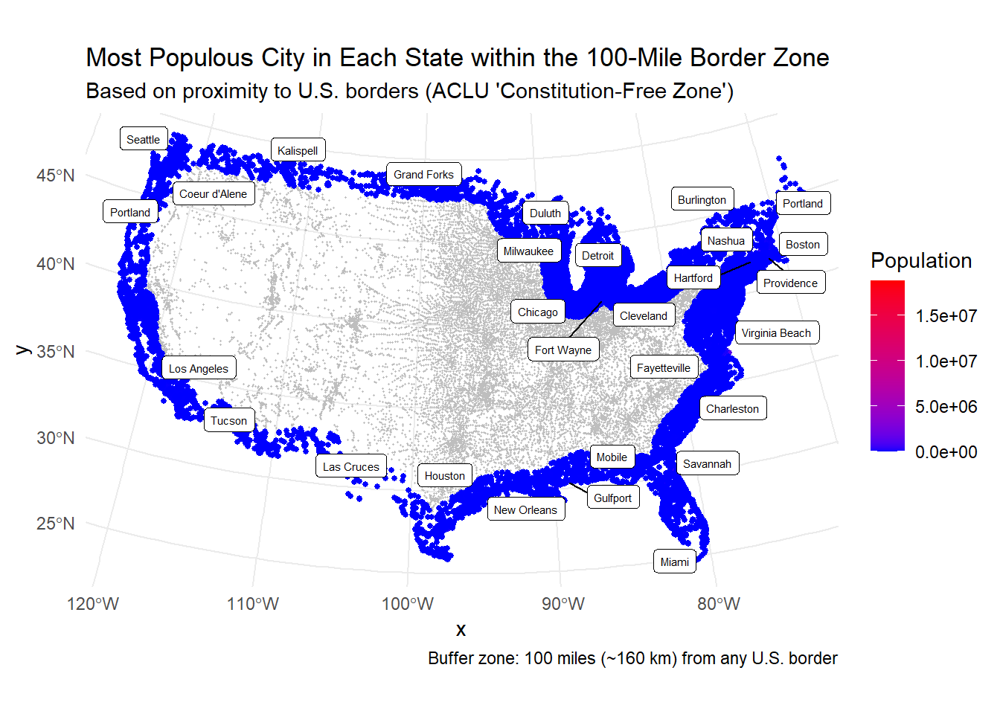

My projects
In the Spring of 2025 I took a class called Quantitative Reasoning (ESS 330) which introduced us to the computer language, R. I learned to write code and about data science. Here is a collection of the skills I learned within the course!
Lab 1 - Personal Protfolio

In the first lab, I learned how to create Github websites using RStudio. Actually, this website is the first I have ever created!
Lab 2 - Manipulating and Summarizing Data with dplyr

In Lab 2, I analyzed a dataset that contained tree growth records from Minnesota. I used R and tidyverse to manipulate and visualize the data. In this lab I developed skills in data cleaning and filtering. I can now confidently handle environmental data and find insights from datasets.
Lab 3 - Data Wrangling and Visualization

In this lab I learned how R is used to analyze real-world datasets. This lab required me to work with COVID-19 data to calculate new cases and deaths by county in Colorado. I developed skills in data manipulation, visualization, and statistical analysis using R programming
Lab 4 - Statistics in R

This lab required me to preform an analysis of the Cutthroat Trout species. I was tasked to find the distribution of the trout across different habitat types. I used a Chi-squared test of independence to find if there was a statistically significant relationship between habitat type and presence of trout. I filtered the datasest and generated visuals to give a clean representation. This lab gave me proficiency is statistical testing and data wrangling.
Lab 5 - Project Proposals
This lab was the start to our final project in the class. Here my group and I created six different project proposals. Each proposal included the idea, its justification, the potential research question, proposed methods, and the expected outcomes. Within the lab, I strengthened my skills in project proposals.
Lab 6 - Machine Learning Workflows

In Lab 6, I used machine learning techniques to preform hydrologic data analysis. I used the CAMELS data, which included precipitation, streamflow, aridity, and more. This data helped me do an exploratory data analysis to fin the relationships between the variables. This lab help me develop skills in data processing, using machine learning, and model preparation. All of these skills allow me to further explore water systems.
Lab 7 - Final Project’s Introduction and Method Draft

In Lab 7, my group and I choose our final project topic: The relationship between chemical exposures and public health. We utilized datasets from the Colorado Environmental Public Health Tracking. This lab helped grow my skills in handling external data and preforming statistical analyses.
Lab 8 - Machine Learing Tuning

This lab focused on hyper-parameter tuning. Using the CAMELS dataset, I used tidymodels to process and clean the data to make sure it was the best for modeling. This lab showed the importance of hyperparameters. The number of trees in a random forest or the learning rate in gradient boosting is needed to get the more accurate model.
Lab 9 - Final Project’s Results and Discussion Draft

In the lab, my group and I looked at the relationships between air quality and asthma rates across Colorado. We calculated the correlation between annual PM 2.5 concentrations and asthma hospitalization rates. We also preformed a linear regression model. Through data clean and preparation (handling missing data, standardizing, merging datasets) we maintained consistency in our comparisons. This approach gave us insights in how environmental factors influence respiratory health issues.
Lab 10 - Distances and Projections

In Lab 10, I looked into how use spatial data to analyze geographic relationships. I manipulated spatial data for the United States, Canada, and Mexico to develop an understand how map projections influence spatial calculations and analyses. This lab developed my skills in handling geospatial data, map projections, and interpreting spatial relationships.
Lab 11 - Final Project Presentation

In our final lab, my group and I presented our final project’s findings. This project required me to synthesize the skills and knowledge I gained throughout the semester. I formulated a research question, collected and analyzed data, and applied spatial and statistical techniques to find the relationship between air pollution and asthma rates. This project was a culmination of my work during the semester and the skills I have in computer data science.